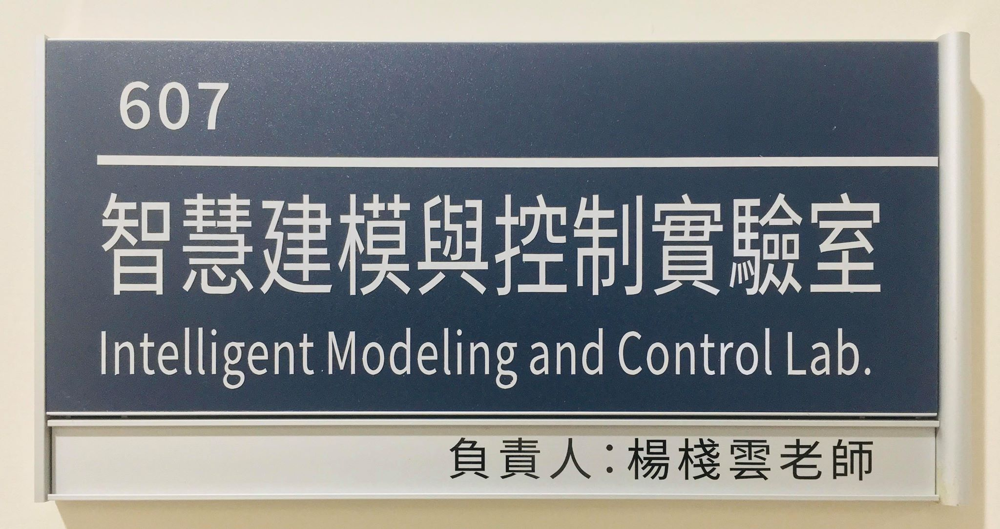

CHAN YUN YANG Professor
EDUCATION
EXPERIENCE
HONOR
- National Taipei University Academic Research Award, 2015.
- Excellent Patent Technology Award, Beijing, China, 2014.
- National Taipei University Academic Research Award, 2014.
- The Ministry of Science and Technology won the award for the promotion and retention of special talents for colleges and universities to implement flexible salary schemes, 2014.
- LED Creative Lantern Design Competition, Kaohsiung, Taiwan, Masterpiece, 2013.
- The Ministry of Education won the award for the “Special Elite Salary for Special Talents in Universities and Colleges Not Going to the Top University Programs and Awarding University Teaching Excellence Programs”.
- Member of the Taiwan Rehabilitation Engineering and Auxiliary Technology Association, Deputy Secretary-General.
- Helmet Having Active Alert Device, Silver Medal for the Geneva Exhibition in Geneva, 2010.
- Helmet Having Active Alert Device, Seoul Invention Exhibition Gold Medal, 2009.
- Helmet Having Active Alert Device, Gold Medal of the Invention Exhibition in Nuremberg, Germany, 2009.
- The helmet that can be actively alerted, the Gold Medal of the Invention Competition of the Taipei International Invention and Technology Exchange Exhibition, 2009.
- Moody Cup – Solar Photovoltaic Application Design Competition, Bronze Award, 2010.
- 2008 National LED Creative Design Competition, Applied Product Design Group, first place, 2009
TEACHING COURSES
-
U2286, Electronic Circuits (I)
U2286, Electronic Circuits (II)
U2352, Electronic Circuits Laboratory
U2125, Electrical Circuits (I)
U2076, Electrical Circuits (II)
U2296, Digital System Laboratory
M5227, U3212, Machine Learning
M5227, Intelligent Control
M5227, Vehicle Engineering
U3048, Senior Projects I
INTELLIGENT MODELING AND CONTROL LAB
Address: Room 607, Elytone EECS Building
Phone: (02)8674-1111 ext: 68839
The Intelligent Modeling and Control Lab was originally created to look for a softer, more user-friendly interface in the experience of human and machine system operations, citing computational methods as tools for intelligent decision making. Furthermore, it explores the problems of various human-machine interaction systems. It is expected to find the criteria for the behavior between system input and output in a large number of data in a human-computer interaction system, model it, and then use control theory and system engineering to establish prediction and control. mechanism. Its application is mainly in the detection, modeling, and control of mobile behaviors such as human body and implements with behavioral capabilities. The laboratory focuses on the intelligent modeling of kinematics or dynamics of behavioral objects, such as robots, biomechanics, and machines with frequent human-computer interaction. The integration of its overall system is also included in the research direction of interest in this laboratory.